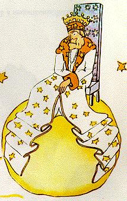

Il se trouvait dans la région des astéroïdes 325, 326, 327, 328, 329 et 330. Il commença donc par les visiter pour y chercher une occupation et pour s'instruire.
La première était habitée par un roi. Le roi siégeait, habillé de pourpre et d'hermine, sur un trône très simple et cependant majestueux.
- Ah! Voilà un sujet, s'écria le roi quand il aperçut le petit prince.
Et le petit prince se demanda:
- Comment peut-il me reconnaître puisqu'il ne m'a encore jamais vu !
Il ne savait pas que, pour les rois, le monde est très simplifié. Tous les hommes sont des sujets.
- Approche-toi que je te voie mieux, lui dit le roi qui était tout fier d'être roi pour quelqu'un.
Le petit prince chercha des yeux où s'asseoir, mais la planète était toute encombrée par le magnifique manteau d'hermine. Il resta donc debout, et, comme il était fatigué, il bâilla.
- Il est contraire à l'étiquette de bâiller en présence d'un roi, lui dit le monarque. Je te l'interdis.
- Je ne peux pas m'en empêcher, répondit le petit prince tout confus. J'ai fait un long voyage et je n'ai pas dormi...
- Alors, lui dit le roi, je t'ordonne de bâiller. Je n'ai vu personne bâiller depuis des années. Les bâillements sont pour moi des curiosités. Allons! bâille encore. C'est un ordre.
- Ça m'intimide... je ne peux plus... fit le petit prince tout rougissant.
- Hum! Hum! répondit le roi. Alors je... je t'ordonne tantôt de bâiller et tantôt de...
Il bredouillait un peu et paraissait vexé. 
Car le roi tenait essentiellement à ce que son autorité fût respectée. Il ne tolérait pas la désobéissance. C'était un monarque absolu. Mais, comme il était très bon, il donnait des ordres raisonnables.
"Si j'ordonnais, disait-il couramment, si j'ordonnais à un général de se changer en oiseau de mer, et si le général n'obéissait pas, ce ne serait pas la faute du général. Ce serait ma faute."
- Puis-je m'asseoir ? s'enquit timidement le petit prince.
- Je t'ordonne de t'asseoir, lui répondit le roi, qui ramena majestueusement un pan de son manteau d'hermine.
Mais le petit prince s'étonnait. La planète était minuscule. Sur quoi le roi pouvait-il bien régner ?
- Sire, lui dit-il... je vous demande pardon de vous interroger...
- Je t'ordonne de m'interroger, se hâta de dire le roi.
- Sire... sur quoi régnez-vous ?
- Sur tout, répondit le roi, avec une grande simplicité.
- Sur tout ?
Le roi d'un geste discret désigna sa planète, les autres planètes et les étoiles.
- Sur tout ça ? dit le petit prince.
- Sur tout ça... répondit le roi.
Car non seulement c'était un monarque absolu mais c'était un monarque universel.
- Et les étoiles vous obéissent ?
- Bien sûr, lui dit le roi. Elles obéissent aussitôt. Je ne tolère pas l'indiscipline.
Un tel pouvoir émerveilla le petit prince. S'il l'avait détenu lui-même, il aurait pu assister, non pas à quarante-quatre, mais à soixante-douze, ou même à cent, ou même à deux cents couchers de soleil dans la même journée, sans avoir jamais à tirer sa chaise ! Et comme il se sentait un peu triste à cause du souvenir de sa petite planète abandonnée, il s'enhardit à solliciter une grâce du roi:
- Je voudrais voir un coucher de soleil... Faites-moi plaisir... Ordonnez au soleil de se coucher...
- Si j'ordonnais à un général de voler d'une fleur à l'autre à la façon d'un papillon, ou d'écrire une tragédie, ou de se changer en oiseau de mer, et si le général n'exécutait pas l'ordre reçu, qui, de lui ou de moi, serait dans son tort ?
- Ce serait vous, dit fermement le petit prince.
- Exact. Il faut exiger de chacun ce que chacun peut donner, reprit le roi. L'autorité repose d'abord sur la raison. Si tu ordonnes à ton peuple d'aller se jeter à la mer, il fera la révolution. J'ai le droit d'exiger l'obéissance parce que mes ordres sont raisonnables.
- Alors mon coucher de soleil ? rappela le petit prince qui jamais n'oubliait une question une fois qu'il l'avait posée.
- Ton coucher de soleil, tu l'auras. Je l'exigerai. Mais j'attendrai, dans ma science du gouvernement, que les conditions soient favorables.
- Quand ça sera-t-il ? s'informa le petit prince.
- Hem! Hem! lui répondit le roi, qui consulta d'abord un gros calendrier, hem! hem! ce sera, vers... vers... ce sera ce soir vers sept heures quarante ! Et tu verras comme je suis bien obéi.
Le petit prince bâilla. Il regrettait son coucher de soleil manqué. Et puis il s'ennuyait déjà un peu:
- Je n'ai plus rien à faire ici, dit-il au roi. Je vais repartir !
- Ne pars pas, répondit le roi qui était si fier d'avoir un sujet. Ne pars pas, je te fais ministre !
- Ministre de quoi ?
- De... de la justice !
- Mais il n'y a personne à juger !
- On ne sait pas, lui dit le roi. Je n'ai pas fait encore le tour de mon royaume. Je suis très vieux, je n'ai pas de place pour un carrosse, et ça me fatigue de marcher.
- Oh! Mais j'ai déjà vu, dit le petit prince qui se pencha pour jeter encore un coup d'œil sur l'autre côté de la planète. Il n'y a personne là-bas non plus...
- Tu te jugeras donc toi-même, lui répondit le roi. C'est le plus difficile. Il est bien plus difficile de se juger soi-même que de juger autrui. Si tu réussis à bien te juger, c'est que tu es un véritable sage.
- Moi, dit le petit prince, je puis me juger moi-même n'importe où. Je n'ai pas besoin d'habiter ici.
- Hem! Hem! dit le roi, je crois bien que sur ma planète il y a quelque part un vieux rat. Je l'entends la nuit. Tu pourras juger ce vieux rat. Tu le condamneras à mort de temps en temps. Ainsi sa vie dépendra de ta justice. Mais tu le gracieras chaque fois pour l'économiser. Il n'y en a qu'un.
- Moi, répondit le petit prince, je n'aime pas condamner à mort, et je crois bien que je m'en vais.
- Non, dit le roi.
Mais le petit prince, ayant achevé ses préparatifs, ne voulut point peiner le vieux monarque:
- Si Votre Majesté désirait être obéie ponctuellement, elle pourrait me donner un ordre raisonnable. Elle pourrait m'ordonner, par exemple, de partir avant une minute. Il me semble que les conditions sont favorables...
Le roi n'ayant rien répondu, le petit prince hésita d'abord, puis, avec un soupir, prit le départ.
- Je te fais mon ambassadeur, se hâta alors de crier le roi.
Il avait un grand air d'autorité.
Les grandes personnes sont bien étranges, se dit le petit prince, en lui-même, durant son voyage.
| Chapitre IX | |
Capítulo IX |
| Index | Capítulo X | |
| Chapitre XI | Capítulo XI |